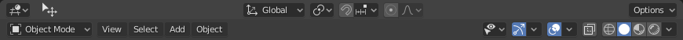

简介¶
The 3D Viewport is used to interact with the 3D scene for a variety of purposes, such as modeling, animating, texture painting, etc.
标题栏区块¶

物体模式标题栏。¶
标题栏包含基于当前 模式 的各种菜单和控件。
Tools and modes in the 3D Viewport header are split in three groups of buttons:
变换控件¶
- 变换方向
用于选择和修改活动 变换方向。
- 轴心点
Used to change the reference point (or Pivot Point) used by many mesh manipulation tools.
Read more about Pivot Points.
- 吸附
Controls the snapping tools that help with transforming and modeling objects.
- 衰减编辑
显示方式&着色类型¶
- 物体类型可见性
Change the Object Type Visibility and selectability of objects in the 3D Viewport.
- 视图Gizmo
Change the way how gizmos are displayed in the 3D Viewport.
- 视图重叠
Change the way how overlays are displayed in the 3D Viewport.
- 透视
将整个场景透明显示。这是着色控件内 透视 选项的快捷方式。
- 视图着色
Change the shading of the 3D Viewport.